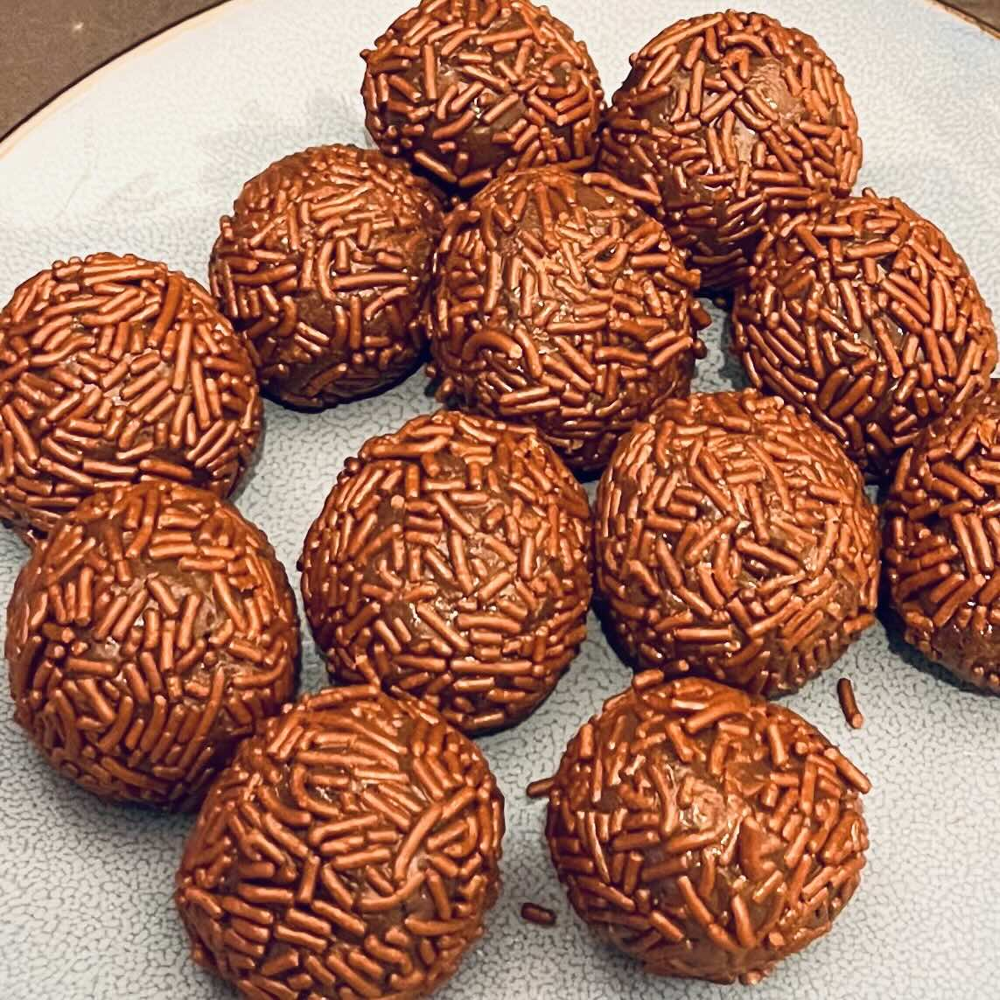

Ingredientes
- 1 lata de leite condensado
- 1 barra de chocolate (100 g)
- 100 g de chocolate granulado
Preparo
- Em uma panela, adicione o leite condensado e a barra de chocolate cortada em pedaços pequenos (para derreter mais fácil).
- Misture em fogo baixo até levantar fervura.
- Após ferver, continue mexendo até engrossar. Quando a mistura estiver mais grossa e o fundo da panela estiver soltando, desligue o fogo.
- Reserve em um recipiente untado com manteiga ou óleo vegetal.
- Após esfriar, enrole em bolinhas de cerca de 3 cm de diâmetro.
- Em um prato separado, coloque o chocolate granulado e passe as bolinhas.
observações
Tamanho de cada brigadeiro: O tamanho do brigadeiro pode variar de acordo com a sua preferência. Se estiver fazendo para uma festa, as bolinhas podem ter de 1.5 cm a 2 cm. Para comer sozinho ou em poucas pessoas, é possível fazer bolinhas maiores, de até 5 cm de diâmetro.
Reservar com papel filme: Para facilitar a etapa de enrolamento, você pode forrar o recipiente com papel filme antes de untar.
sobre os ingredientes
Chocolate em barra
Como indicado no título, essa é uma versão simplificada do brigadeiro original na qual o chocolate em barra substitui o cacau em pó e a manteiga. Você pode escolher o tipo de chocolate: ao leite, puro ou até mesmo branco.
Chocolate granulado
Podem ser utilizados aqui tanto o granulado comum (hagelslag) quanto raspas de chocolate (vlokken).